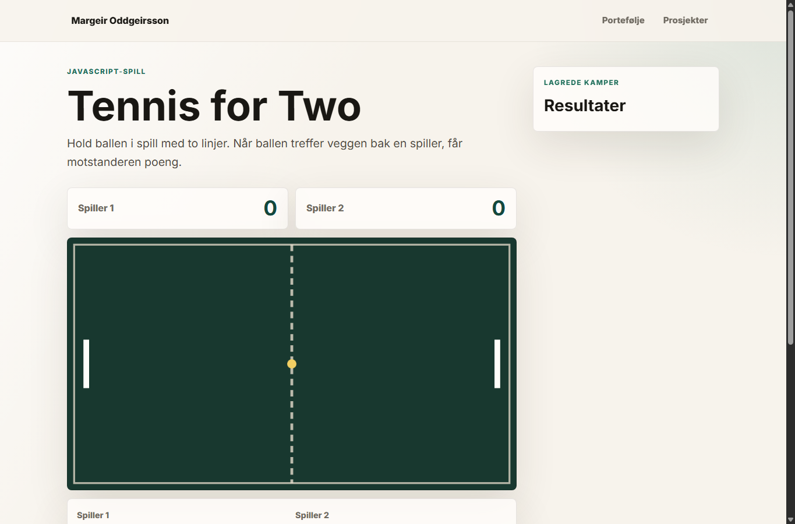
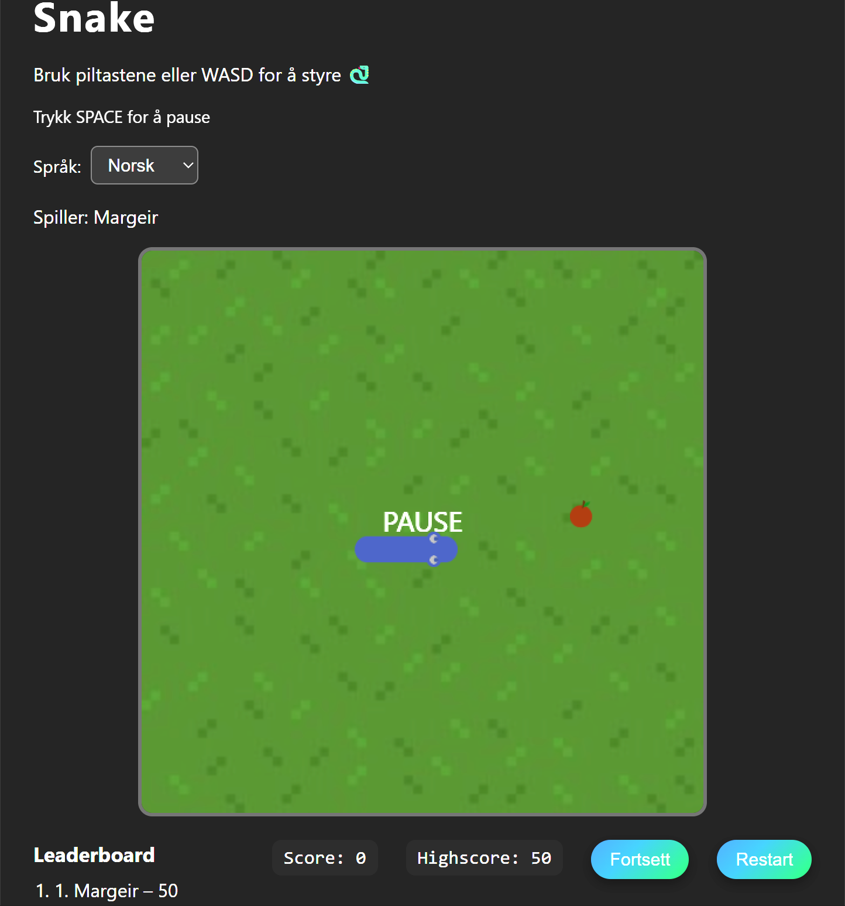
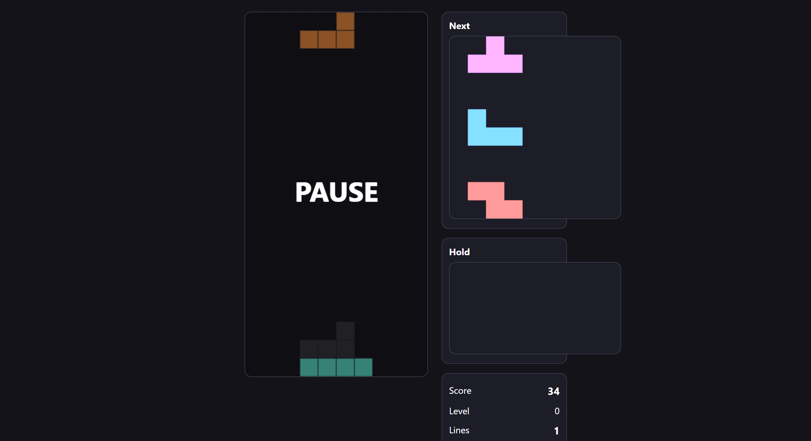

Nettside
Jessheim Discgolf Klubb
En responsiv nettside laget som skoleprosjekt, med fokus på tydelig struktur, innhold og navigasjon.
Besøk prosjektetIT-drift · webutvikling · skoleprosjekter
Jeg er Margeir, IT-drift-student med praktisk bakgrunn og interesse for gode digitale løsninger. Her viser jeg prosjektene jeg har bygget så langt.
Utvalgte prosjekter
En liten samling nettsider og spillprosjekter som viser progresjon, kodeforståelse og interesse for brukervennlig design.
Nettside
En responsiv nettside laget som skoleprosjekt, med fokus på tydelig struktur, innhold og navigasjon.
Besøk prosjektet
JavaScript-spill
Et spillbart tennisprosjekt for to spillere, med poengtelling og enkel kampflyt.
Besøk prosjektet
JavaScript-spill
Et spillbart Snake-prosjekt med språkvalg og ulike vanskelighetsgrader.
Besøk prosjektet
JavaScript-spill
Et Tetris-prosjekt under videre utvikling, med fokus på spillogikk og bedre flyt.
Besøk prosjektet